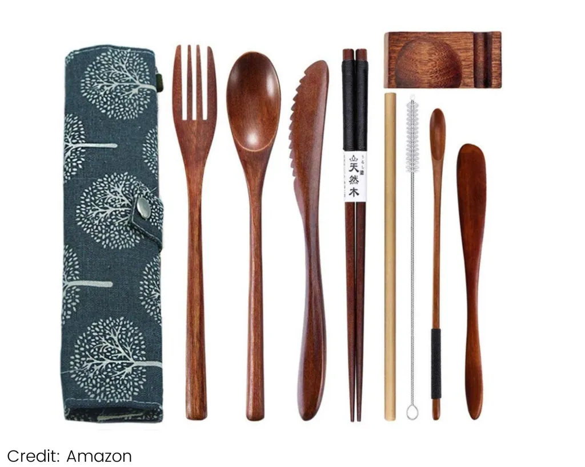

Vive de forma sostenible, ayuda al planeta con Ecovida
Bolsas stasher
Diga adiós a las bolsas de un solo uso: nos volvemos sosteniblesLas bolsas Stasher son nuestra bolsa de cabecera para básicamente todas nuestras necesidades. Utilícela como bolsa para sándwiches o como recipiente para guardar aperitivos y alimentos, o como bolsa de almacenamiento sin residuos para los accesorios del gimnasio o los objetos de valor. Están hechas de silicona, coloreadas con colorantes aptos para alimentos, y se mantienen muy bien. Con bolsas, cuencos y un sinfín de tamaños y colores, hay algo para todos.
Bolsas de comida a granel reutilizables
Por menos de 20 dólares, puedes conseguir estas bolsas de comida a granel multiusosSon ligeros, lavables para facilitar su uso diario y están hechos con algodón y lino no tóxicos. Además, un solo juego viene con una mezcla de 6 bolsas grandes y XL para todas sus necesidades de compra a granel. Cárgalos con cereales integrales, frutos secos, semillas, fruta o verduras. Después, lávelo y reutilícelo. No volverás a necesitar bolsas de plástico en el supermercado.

Juegos de cubiertos de Bambú
Equipado con un tenedor, un cuchillo, una cuchara, una pajita, palillos y una bolsa fácil de transportar, contiene todo lo necesario. Tanto si viajas, como si vas de camping o te encuentras comiendo sobre la marcha, di no al plástico y opta por esta alternativa sostenible. Cuesta menos de 15 dólares y viene con un estuche elegante y ligero que se puede ocultar fácilmente en el bolso o la cartera.